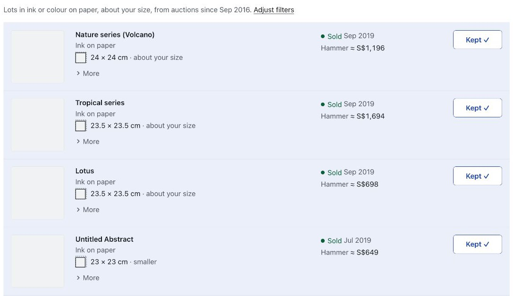
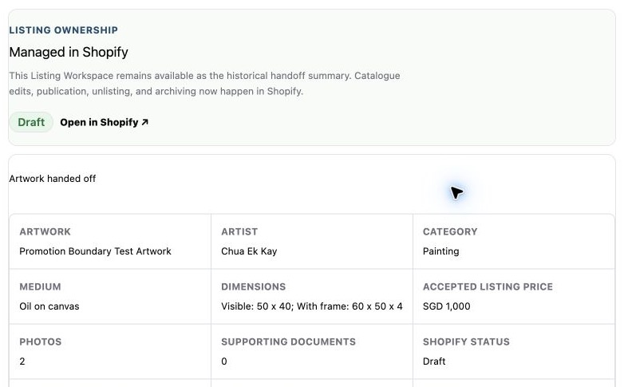
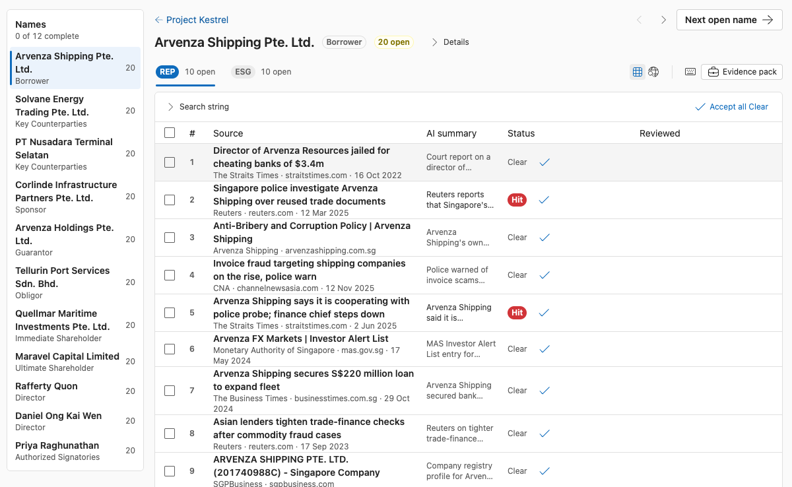

Lim Yee Han
I'm a software engineer in Singapore. I spent five years building backend systems and developer tools at TikTok, Firerock, Starboard Ventures and Crypto.com. Since March 2026 I've been working directly with businesses: I sit with the people who do the work, find out how it's really done, and build the system for it.
limyeehan@gmail.com · github.com/YeeeeeHan · Resume (PDF)
ArtAgain
ArtAgain is an art resale business. I've worked with them as a consulting engineer since March 2026. This is the part of that work I learnt the most from.
They wanted a valuation engine that could price artworks automatically so they wouldn't have to do the research themselves. I went straight to an AI agent that would crawl the web for similar pieces and come up with a price. I had AI start coding it, and it was a mess. I'd picked a solution before I understood what the job was.
So I sat down with the person who does the pricing and asked her to walk me through it. Her process was pretty mechanical. She opens one database, looks up the artist, and filters by medium, edition, size and year until she's left with a few comparables. None of that needs a model. It's just tedious, and the tedious part was what they actually wanted off their plate.
The second version was just filters, with a short note explaining why each result showed up. No AI, and she still decides the price.

AI only ended up in one spot. The database lists every auction result for an artist, so past sales of the exact work you're pricing get mixed in with sales of everything else they've made. You want to separate those, because a work's own sales history shows you where its price is heading. Rules can flag likely matches by title and size, but the only way to be sure it's the same piece is to compare the photos. That's the one question I handed to a model.
What I took from it: most systems don't need AI. Get the person doing the job to show you how they do it before you pick the tech. Use rules for the boring bits, and save AI for the one question rules can't answer.
The pricing tool is one piece of a longer job. Before it, I mapped how a seller gets from a first WhatsApp message to a live Shopify listing, and found the steps that only existed in chat messages and in people's heads. Then I built the database, the staff views and the listing workspace, refined them with the staff who use them on real seller submissions, and connected the workspace to Shopify. Listing an artwork went from three days to two hours.

Compliance screening for a Singapore financial institution
This one I started myself. I engaged the compliance team of a Singapore financial institution, ran discovery with the people who do the screening, and mapped how every party in a deal moves through onboarding, adverse-news screening, periodic review and audit. Then I built a working demo tailored to that workflow: a screening run for each party with evidence summaries, the reviewer's recorded outcome and reasons, a full run history for audit, risk ratings that set the next review date, and daily monitoring. The compliance team is championing it internally.

Other work
Cronos AI SDK · Crypto.com, 2024 to 2026
I designed and built the SDK so developers could ship AI agents that act on the Cronos chain. It uses LangChain and LangGraph, with on-chain tools built with the Explorer team.
Repl · Starboard Ventures, 2023 to 2024
A DeFi protocol on Filecoin that reached USD 15M in deposits, since renamed Parasail. I shipped the upgradeable smart contracts, designed the pFIL rebasing token so holders earn yield without a staking step, and built the dashboard the founders used to approve protocol transactions with hardware wallets.
RightCurve · side project
Practice questions for Singapore O-Level and A-Level students, with Gemini explaining each question. rightcurve.sg
Contact
Email me at limyeehan@gmail.com.